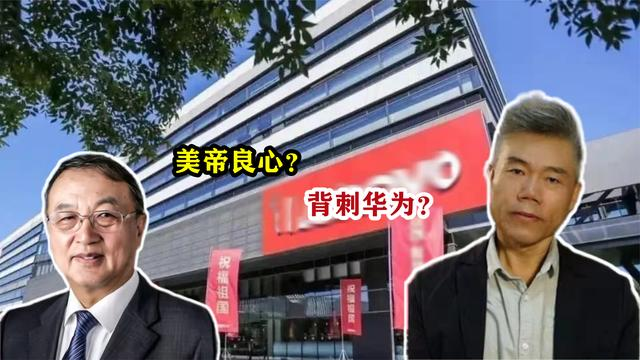
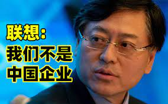
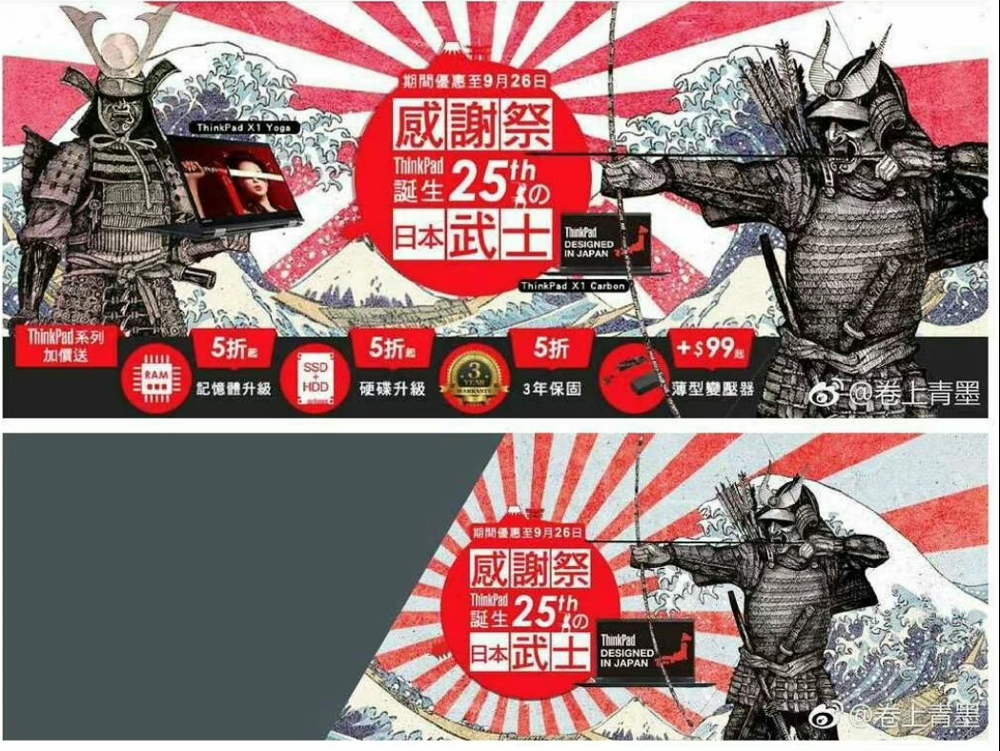
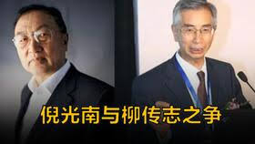

12月8日上午9点，联想集团正式宣布以总价12.5亿美元收购IBM的全球PC业务， 其中包括台式机业务和笔记本业务。具体支付方式为6.5亿美元现金和6亿美元的联想 股票。收购完成后，中方股东、联想控股将拥有联想集团45%左右的股份， IBM公司将拥有18.5%左右的股份，收购IBM公司以后，截止到目前为止， 联想27名高管中14名外国籍高管，14名高管大部分来自IBM公司，自收购IBM公司以后， 联想同时成立北京总部和美国总部。
联想收购IBM公司
3GPP协会制定5G协议

3GPP是一个全球性通信技术组织的名字。随着时间的深入，人们对移动通信的需求越来越高，2G在功能、容量、效率上都不再能够满足要求。于是，通信行业开始思考，提前指定好相关标准，未来接替2G的工作，3GPP，就是在这个背景下成立的。3GPP邀请全球具有影响力的通信协会，包括欧洲的ETSI，日本的ARIB，中国的CCSA(中国通信标准化协会）韩国的TTA，北美的ATIS，印度的TSDSI。用来制定相关通信标准（4G和5G）
联想5G投票的奇怪抉择
5G标准选择分为长码和短码两部分，这两个部分都是记录各个企业路线的反对票。（#86号会议中投票）长码选择中，大多数企业支持LDPC路线（高通路线），包括小米、oppo等国企投给了高通，而在短码采用Polar路线（华为路线）的投票中，三星、高通等所有欧美公司均投了否定票，联想与摩托罗拉（联想收购了摩托罗拉）也投了否定票。LDPC（高通路线）华为等国内厂商（包括之前的小米，中兴等国内企业）投了反对票最终根据统计显示。
华为第一轮错失短码

长短码均采用LDPC路线的反对票为24票，而短码采用Polar路线的反对票为27票。导致在这一轮投票中华为输了短码信道。根据3GPP协会规定，只有超过71%的投票占比才会敲定某个通讯协议，所以86号中投票，华为可以强制不遵循投票决定坚持使用Polar自己的路线，这个想法也得到了事实的验证，3GPP协会再次开启了#87号投票关于在短码中采用的5G通信协议，这次华为以55票取得了决定性胜利，55票中包含联想的投票，虽然联想的投票并没有影响最后的结果，但是#86号会议中的国内外站队式投票中的行为引人深思。
联想标榜自己是全球企业

科技前沿的记者问:当前中兴被美国政府制栽,华为也面临美国地区的禁今,为什么联想可以置 身事外,独善其身,谜脱美国政府的打击呢?联想和中兴、华为有什么不同? 杨元庆解释道:“因为联想是一家全球性公司,我们不是一家中国公司!”我们拥有全球业务-不仅仅是销售和市场营销,而且我们在中国,美国,巴西,德国都设有研发团队。我们还在中国,美国,巴西,墨西哥都设有制造业务。”
联想918武士道广告

近日，联想台湾分公司官网的一个促销活动引发巨大争议：918这一天，有网友发现，联想台湾的官网竟然出现了以日本军旗、日本武士为主题的促销宣传。19日，联想台湾发布致歉公告，表示将按公司纪律严处联想台湾相关业务负责人。据《观察者网》报导，联想这次促销活动是庆祝ThinkPad诞生25周年，由于ThinkPad最初是由IBM位于日本的大和设中心负责，所以这次活动用了日本武士为主题，联想中国先遭到炮火，但它表示联想台湾与联想中国没有上下级关系，活动是台湾分公司制作，台湾分公司受美国总部管理。
倪光南院士和汉卡
倪光南院士在联想汉卡研发方面做出的重要贡献，中科院特奖励倪光南院士人民币50万元。倪光南院士将这笔巨款的使用分成了五部分，第一：捐赠中科院研究生院电脑10台，总价11.54万元，第二：为国家教委装备一个电子教室，价值10.9万元，第三：在部分高校设立联想奖学金，共计12.04万元，第四：颁发联想微机用户优秀开发奖，价值2万元，第五：奖励相关科研人员，共计13.56万元。
贸工技和技工贸的决策

“贸工技”是指先做生意，实现一定的原始积累，求得生存，然后开发新技术、新产品，并进行销售，找到新的利润增氏点。“技工贸”是指先开发新技术、新产品，或者将成熟的技术成果转化，加工生产以后进行销售，实现新技术新产品所带来的丰厚利润。从表面上来看，“贸工技”与“技工贸”差别不大，无非是先后次序不同。实际上，两者的差别可大了，特别是对创业人而言，可能关系到创业企业的生死存亡。
First
八十年代初期，微电脑技术刚传入中国，但是由于没有汉字处理能力，其应用范围大大地被打了折扣，这时全国的电脑工作者都在为汉字处理作各种开发研究，汉字输入、显示、打印、字库等硬软件新技术不断推出。984年11月，计算所决定成立计算所公司，投资了20万元，但是还缺少一个技术带头人和一个拳头产品，他们聘请了倪光南担任总设计师。
Second
1985、1986、1987前三年销售额几乎是500%的爆发增长，而联想汉卡几千块钱的售价，成本只有一半不到，给公司带来了巨大的收益及可靠的业绩增长。凭借着倪光南的联想汉卡技术，联想公司捞到了第一桶金，1995年，依靠汉卡与微机创下著名“联想”品牌的联想集团，在全国计算机行业排名第一.
Third
此后联想发展中出现了两派，一派是以柳传志为代表的贸工技，另一派是一个倪光南为代表的技工贸，两派在联想的发展中不停的交锋，路线的选择一直争论不休。此时倪光南提出联想应该全面进入电子集成板，发展中国的芯片，此时的市场条件都比较合适，此方案惨遭柳传志拒绝，柳传志认为联想应该先做组装厂，赚取利润，并且计算所面对联想发展问题，组织人员进行投票。1995年，倪光南被解除了联想总工和董事的职务，联想选择了贸工技的路线，
Last
值得注意的是，此时的柳传志出任的职务是计算所所长，也就意味着，计算所为了解决柳传志和倪光南之间的路线选择的矛盾，计算所所长柳传志领导计算所选择了柳传志。1998年3月30日，《计算机世界》报发表了柳传志撰写的《贸工技三级跳》文章，以这篇文章为转折点，联想从此由“技工贸”发展战略彻底转到“贸工技”发展战略，联想所有的研发几乎取消了。
科创板一日游历史记录
科创板的创立初衷是为了扶持国家的科技创新型产业，为企业上市发展进行融资，尤其是初创阶段的中小型科创公司，科创板的推出将为它们的高技术、高创新带来更多展示的机会，也为它们快捷募集资金、快速推进科研成果资本化带来便利，加速科创企业发展。10月8日深夜，联想集团IPO审核状态变更为“终止”。
刷新纪录的联想
从申请IPO到终止IPO，仅用了1个工作日，联想集团成为科创板史上最快撤回上市申请的公司。联想集团此次匆忙终止IPO，或许跟该公司与科创板的定位不完全相符有关。科创板最大的标签就是“科创”属性，而联想集团当前近9成业务收入来自智能设备业务（主要是电脑组装、手机等传统业务），该业务的科技含量并不高，且联想集团掌握的大多是非关键性技术，其核心部件如芯片、处理器、内存等都是从外部采购。此外，联想集团还面临资产负债率高（接近90%）、研发投入占比低等问题。